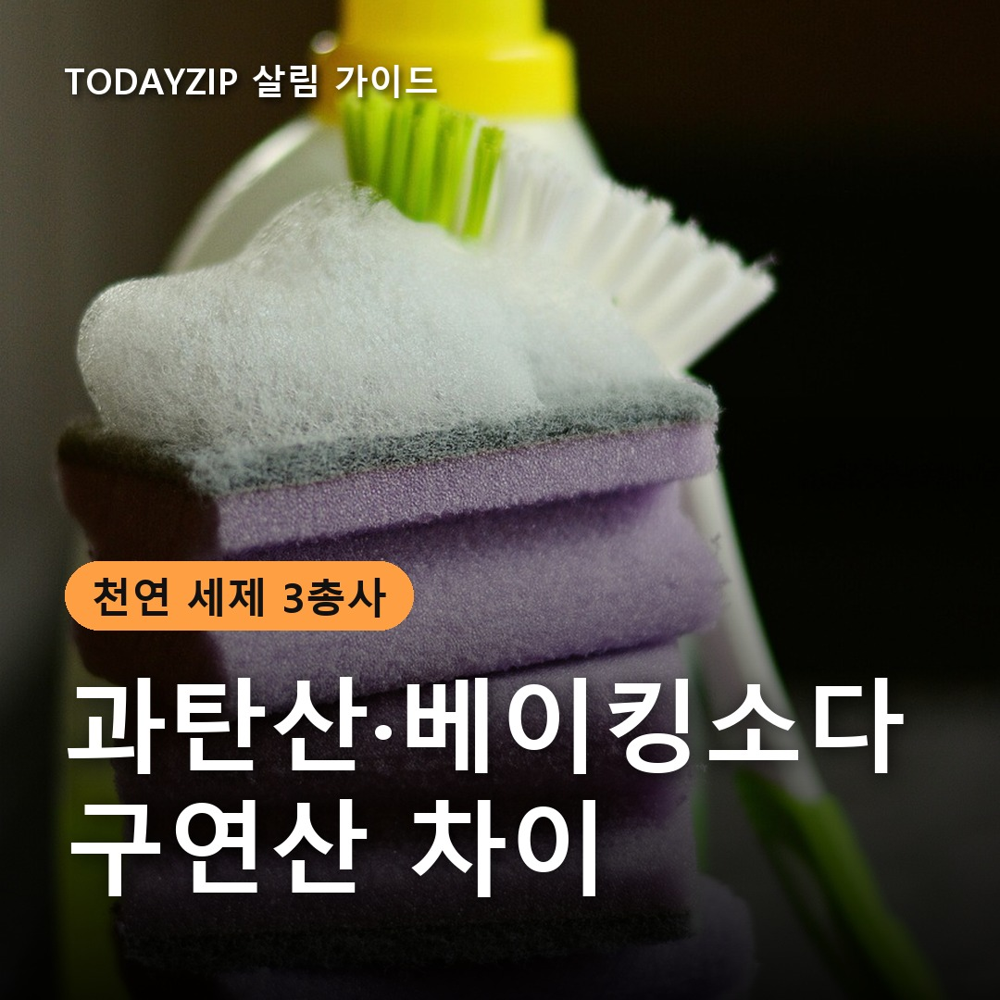
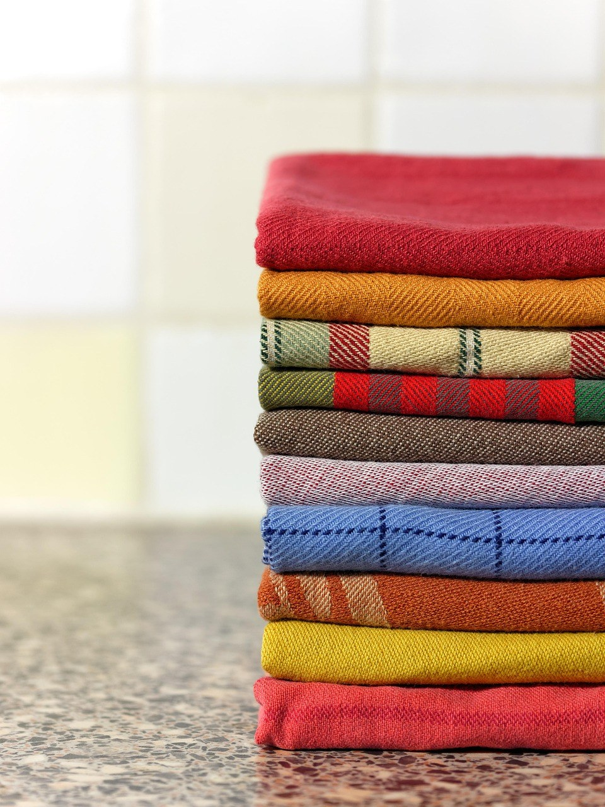
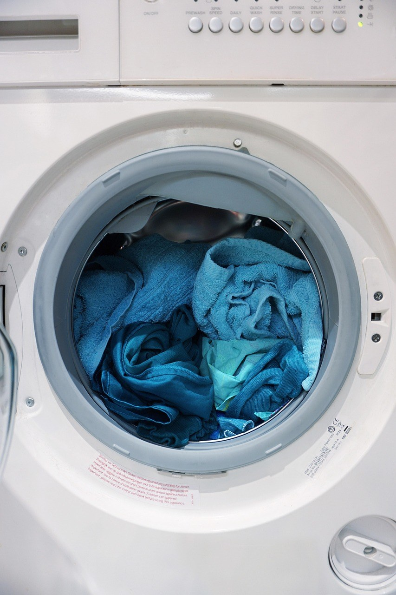
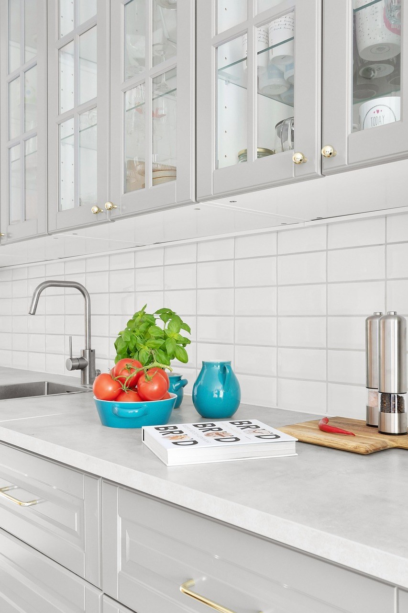
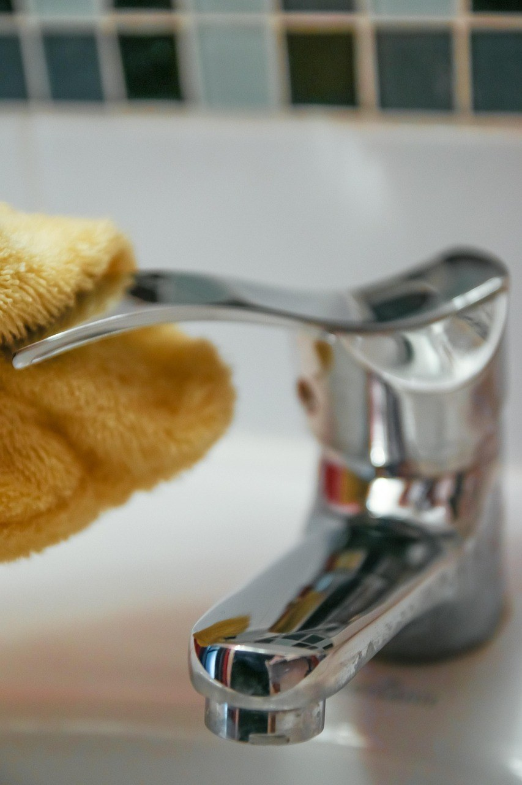

이 포스팅은 쿠팡 파트너스 활동의 일환으로, 이에 따른 일정액의 수수료를 제공받습니다.
[사진 1: 썸네일]
옷장에서 꺼낸 흰 옷이 누렇게 변해 있으면 제일 먼저 떠오르는 게 과탄산소다예요. 그런데 마트에 가면 베이킹소다, 구연산까지 비슷한 하얀 가루가 나란히 있어서 뭘 사야 할지 헷갈리죠.
세 가지는 이름은 비슷해도 성질도, 잘 맞는 얼룩도 완전히 달라요. 오늘은 과탄산소다 베이킹소다 구연산 차이를 표로 비교하고, 세탁·주방·욕실에서 어떤 걸 골라야 하는지, 섞으면 안 되는 조합까지 정리해 드릴게요.
[사진 2]
집안 때는 크게 두 종류예요. 땀, 피지, 기름때처럼 산성을 띠는 때는 알칼리성 세제로, 물때나 석회 자국, 소변 때처럼 알칼리성 때는 산성 세제로 지워야 잘 지워져요.
과탄산소다와 베이킹소다는 알칼리성, 구연산은 산성이에요. 그래서 '어떤 얼룩이냐'에 따라 고르면 실패가 줄어들어요.
세 가지를 표로 정리했어요. pH는 물에 녹였을 때의 일반적인 값이에요.
| 구분 | 과탄산소다 | 베이킹소다 | 구연산 |
|---|---|---|---|
| 성질 | 강한 알칼리성 (pH 약 11) | 약한 알칼리성 (pH 약 8) | 약한 산성 |
| 작용 | 따뜻한 물에서 산소가 나와 표백 | 기름때를 불리고 냄새를 흡착 | 물때·석회질을 녹임 |
| 잘 맞는 곳 | 누런 흰 옷, 수건 냄새, 행주·도마 | 가스레인지 주변, 냄비, 냉장고 냄새 | 수전·거울 물얼룩, 전기포트, 변기 |
| 물 온도 | 40~60도 따뜻한 물 | 미지근한 물 | 찬물·미지근한 물 |
| 주의 | 울·실크·가죽, 알루미늄 금지 | 연마력이 있어 코팅면 주의 | 대리석·철 소재 주의, 락스와 혼합 금지 |
[사진 3]
과탄산소다는 탄산나트륨과 과산화수소가 결합한 산소계 표백제예요. 40도 이상의 따뜻한 물에 녹이면 산소가 나오면서 누런 때와 냄새의 원인을 분해해요. 찬물에서는 잘 녹지 않아 효과가 약해요.
흰 옷이나 수건은 따뜻한 물에 포장의 권장량을 녹여 30분 정도 담가 둔 뒤 평소처럼 세탁하면 돼요. 색깔 옷은 물 빠짐이 생길 수 있으니 안 보이는 곳에 먼저 시험해 보세요.
[사진 4]
베이킹소다는 순한 알칼리라 기름때를 불리고, 고운 가루라 살살 문지르는 연마제 역할도 해요. 물과 섞어 반죽처럼 만든 뒤 가스레인지 주변이나 냄비 바깥 그을음에 바르고 잠시 뒀다 닦아 보세요.
냉장고나 신발장에 그릇째 넣어 두면 냄새를 줄이는 데도 쓸 수 있어요.
[사진 5]
수전과 거울의 하얀 얼룩, 전기포트 바닥의 하얀 가루는 물속 미네랄이 굳은 알칼리성 때예요. 구연산을 물에 녹여 뿌리거나 키친타월에 적셔 붙여 두면 잘 녹아요.
세탁할 때 섬유유연제 대신 헹굼물에 조금 넣기도 해요. 단, 대리석이나 철 소재는 산에 상할 수 있으니 피하세요.
베이킹소다와 구연산을 섞으면 거품이 올라와 세정력이 세진 것 같지만, 사실은 산과 알칼리가 서로 중화되는 반응이에요. 따로 쓰는 게 좋아요.
무엇보다 락스(염소계 표백제)는 구연산·식초 같은 산성 세제나 과탄산소다와 절대 함께 쓰지 마세요. 유해한 가스가 생길 수 있어요.
Q. 과탄산소다와 산소계 표백제는 다른 건가요?
A. 가루형 산소계 표백제의 주성분이 대부분 과탄산소다(과탄산나트륨)예요. 제품에 따라 세정 성분이나 향이 더해져 있으니 성분표를 보고 고르면 돼요.
Q. 찬물에 과탄산소다를 써도 되나요?
A. 찬물에서는 잘 녹지 않고 반응이 약해요. 40~60도 정도의 따뜻한 물에 먼저 녹여 쓰는 게 좋아요.
정리하면, 흰 옷과 수건에는 과탄산소다, 주방 기름때와 냄새에는 베이킹소다, 욕실 물때에는 구연산이에요. 세 가지 모두 락스와는 섞지 않는 것만 기억하면 훨씬 안전하게 쓸 수 있어요.
여러분은 세 가지 중 어떤 걸 가장 자주 쓰세요? 나만의 활용법이 있다면 댓글로 나눠 주세요.
인스타그램 @todayzip.info 에서 살림 꿀팁을 30초 영상으로도 볼 수 있어요.
이 포스팅은 쿠팡 파트너스 활동의 일환으로, 이에 따른 일정액의 수수료를 제공받습니다.